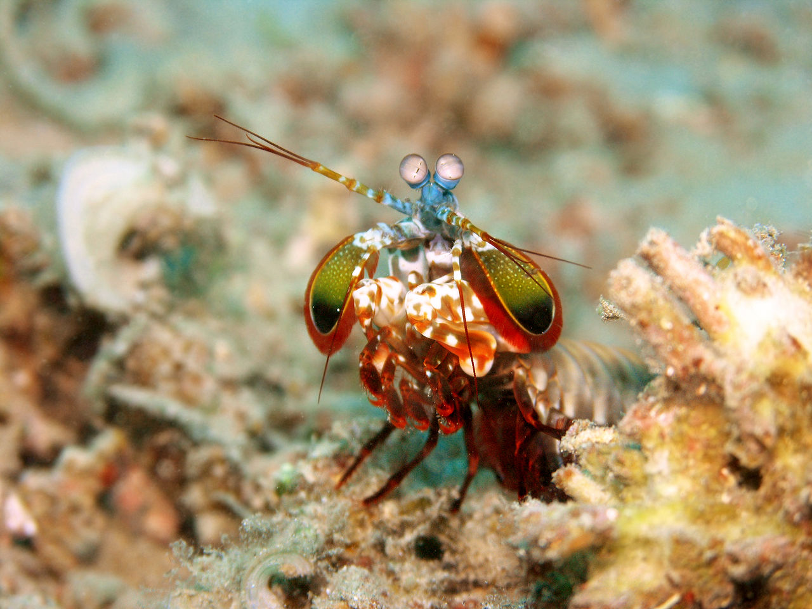

Fatos sobre o Stomatopoda
Informações Gerais
Stomatopoda (ou estomatópode), chamados popularmente de tamarutacas ou de lacraias-do-mar no Brasil, é uma ordem de crustáceos marinhos da subclasse Hoplocarida, que agrupa cerca de 400 espécies, caracterizadas principalmente pela morfologia da segunda pata torácica, que é modificada em apêndice subquelado, lembrando uma pata de louva-a-deus.
Visão Apurada
Os estomatópodes são predadores ativos que caçam presas com o auxílio de um sentido de visão muito apurado e capaz de interpretar polarização no espectro ultravioleta e infravermelho).
Esses animais possuem o mais complexo sistema de visão de cores do mundo animal, pois enxergam 12 cores primárias, correspondentes aos 12 pigmentos distintos presentes em sua retina. Nossos olhos possuem três tipos desses receptores - que correspondem à luz azul, verde e vermelha -, que nos permitem perceber o espectro de cores que vemos. Como cada cone pode ver cerca de 100 cores, os estomatópodes são capazes de ver 1024 cores, ou seja, 1 septilhão de cores. Em comparação, o olho humano vê 106 cores, ou seja, 1 milhão de cores apenas.
Soco de boxeador

São animais que apresentam comportamentos sociais muito variados, desde ameaças visuais contra predadores até comportamentos de côrte. De acordo com a anatomia da sua pata raptorial é possível distinguir entre dois grupos funcionais, as perfuradoras (spearers) ou as esmagadoras (smashers) , sendo que cada um dos tipos apresenta sua própria variação comportamental e até mesmo de habitat. As maiores esmagadoras, tais como exemplares de Odontodactylus scyllarus, são capazes de desferir um dos mais rápidos e violentos golpes do reino animal, um soco que pode apresentar a velocidade de um tiro calibre .22 (equivalente a 720 km/h) e uma pressão de impacto de 600 N/cm² . Essa força esmagadora é a responsável pelo seu título de "lagosta-boxeadora" e é capaz de facilmente quebrar a carapaça de um caranguejo, as conchas duras e calcificadas de gastrópodes ou até mesmo quebrar o vidro reforçado de um aquário.

Referências Bibliográficas
- https://www.infobae.com/america/wapo/2018/05/14/esta-criatura-tiene-los-ojos-mas-extranos-del-reino-animal/
- https://pt.wikipedia.org/wiki/Stomatopoda
- https://www.aquaa3.com.br/curiosidades-camarao-mantis/
- http://osfantasticos-animaisdoplaneta.blogspot.com/2016/11/lagosta-mantis-maior-boxeadora-do-reino.html